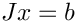

Loading...
Searching...
No Matches
Namespace List
Here is a list of all documented namespaces with brief descriptions:
[detail level 1234]
| NLOCA | |
| NMultiContinuation | Groups and vectors for multi-parameter continuation |
| NEpetra | LOCA Epetra support |
| NInterface | Provides a set of interfaces for users to provide information about the nonlinear problem to LOCA |
| NTransposeLinearSystem | Strategies for solving transpose linear systems |
| NBorderedSolver | Strategies for solving bordered systems of equations |
| NLAPACK | LOCA BLAS/LAPACK support |
| NEigensolver | Collection of eigensolver strategies |
| NThyra | LOCA Thyra support |
| NAnasaziOperator | Various group based operators for computing eigenvalues with Anasazi |
| NEigenvalueSort | Collection of eigenvalue sorting strategies |
| NMultiPredictor | Predictor direction strategies |
| NStepSize | Collection of step size control strategies |
| NSaveEigenData | Collection strategies to save eigenvector/value data |
| NTurningPoint | Groups and vectors for turning point bifurcations |
| NMooreSpence | Groups and vectors for locating turning point bifurcations using the Moore-Spence formulation |
| NMinimallyAugmented | Groups and vectors for locating turning point bifurcations using the minimally augmented turning point formulation |
| NPitchfork | Groups and vectors for pitchfork bifurcations |
| NMooreSpence | Groups and vectors for locating pitchfork bifurcations using the Moore-Spence formulation |
| NMinimallyAugmented | Groups and vectors for locating pitchfork bifurcations using the minimally augmented turning point formulation |
| NHopf | Groups and vectors for Hopf bifurcations |
| NMooreSpence | Groups and vectors for locating Hopf bifurcations using the Moore-Spence formulation |
| NMinimallyAugmented | Groups and vectors for locating Hopf bifurcations using the minimally augmented Hopf formulation |
| NAbstract | LOCA abstract interface namespace |
| NBifurcation | |
| NContinuation | |
| NStatusTest | Convergence tests relating to continuation groups |
| NExtended | Extended groups and vectors |
| NPhaseTransition | Groups and vectors for turning point bifurcations |
| NSingularJacobianSolve | Strategies for solving   |
| NSolver | LOCA Solver classes |
| NStatusTest | Status checkers |
| NNOX | Nonlinear solvers package namespace |
| NAbstract | NOX abstract interface for vector and group |
| NSolver | NOX nonlinear solvers namespace |
| NDirection | Search direction strategies |
| NLineSearch | NOX linesearches |
| NStatusTest | Status checkers |
| NMultiphysics | |
| NSolver | NOX nonlinear solvers namespace |
| NThyra | NOX Thyra support |
| NPetsc | NOX Petsc support |
| NLAPACK | NOX BLAS/LAPACK support |
Generated by